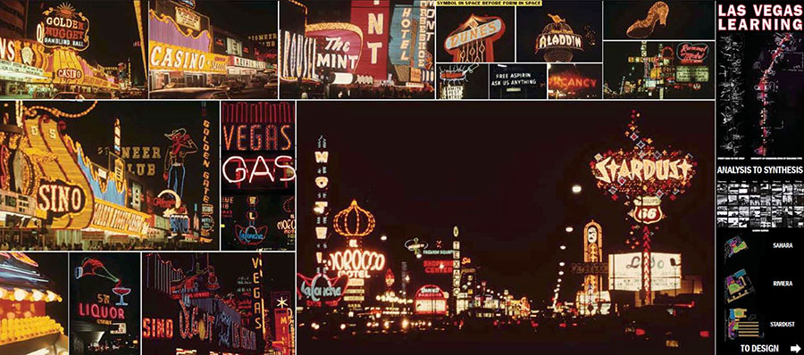

Postmodernism
1972 - Present Day
The destruction of the modernist building Pruitt Igoe’ marked the beginning of a new design period: Postmodernism. For post-modernists, this symbolic event meant that modernism had truly failed. Postmodernists began rebuilding design in the way that they wanted. But what kind of well did they want exactly? For post-modernists, design was about style, and extra ornamentation was valued far higher than in the modernist movement. The post-modernist approach starkly contrasted that of modernists, whose designs they considered bland, post modernist products were made to provoke thought in its audience by challenging ideas using anarchy. The Las Vegas trip is an excellent example of post-modernist design with its bright colours and urban landscapes. Other postmodernist design features are the use of sleek lines, symmetry in objects, the use of glossy plastics and chrome metals and vivid colours. Postmodernism continues to this day in the sense that we still reuse old styles to create something new, a common trend in postmodern design. As a result, we see Postmodernism everywhere, making it the most important design style of the 20th and 21st centuries.